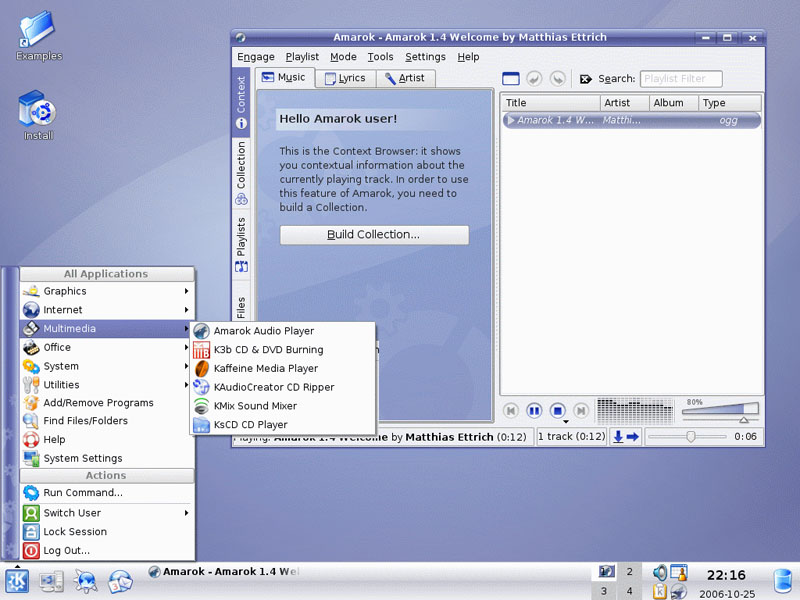

โปรแกรมนี้มีอยู่ใน Linux !
Linux เป็นระบบปฏิบัติการอย่างหนึ่งเหมือนกับ Microsoft Windows และ Mac OS X แต่ Linux มีความแตกต่างจากระบบปฏิบัติการทั้ง 2 คือ Linux เป็นระบบฏิบัติการเสรี คุณสามารถดาวน์โหลด ติดตั้ง ใช้งานได้โดยไม่มีค่าใช้จ่าย และคุณยังสามารถอัพเดทได้โดยไม่เสียค่าใช้จ่ายเช่นกัน
ฟรี ไม่เสียค่าใช้จ่ายอย่างไร? Linux เป็นซอฟต์แวร์โอเพนซอร์สเหมือนกับโปรแกรมที่อยู่ในแผ่น Chantra นี้ มีนักพัฒนากว่า 10,000 คนทั่วโลกสละเวลาและกำลังมาช่วยกันพัฒนาให้ Linux เป็นระบบปฏิบัติการที่ดีที่สุด เพราะ Linux เป็นซอฟต์แวร์โอเพนซอร์ส บริษัทซอฟต์แวร์หลายบริษัทได้พัฒนา Linux ในแบบฉบับของตนเองขึ้นมา ซึ่งก็คือ Linux เหมือนกันแต่แตกต่างกันเพียงจำนวนซอฟต์แวร์และรูปแบบหน้าตาไม่เหมือนกันเท่านั้น ทั้งหมดนี้เราเรียกว่า Linux Distributions หรือเรียกสั้นๆ ว่า Distro
Linux Distributions ที่ได้รับความนิยมสูงสุดในขณะนี้ (อ้างอิงจากเว็บไซต์ DistroWatch) คือ Ubuntu ซึ่ง Ubuntu เป็น Linux ที่สามารถใช้งานได้ทั้งบนเครื่อง labtop, desktop และ server อีกทั้งยังมีโปรแกรมประยุกต์ที่คุณต้องการอย่างเช่น web browser, presentation, document, spreadsheet, instant messaging และอื่นๆ อีกมากมาย
Ubuntu มี 4 รุ่นด้วยกันคือ Ubuntu, Kubuntu, Edubuntu และ Xubuntu คุณอาจเคยได้ยิน Ubuntu และ Kubuntu มาก่อน ความแตกต่างระหว่าง Ubuntu และ Kubuntu คือ Kubuntu ใช้ window manager ที่มีชื่อว่า KDE ส่วน Ubuntu ใช้ GNOME ซึ่งทำให้ Ubuntu และ Kubuntu มีหน้าตาที่แตกต่างกันเหมือนภาพตัวอย่าง
หากคุณต้องการดูว่า Ubuntu หน้าตาเป็นอย่างไรเมื่ออยู่ในเครื่องคอมพวิเตอร์ของคุณ คุณสามารถดาวน์โหลด "Live CD" ของ Ubuntu หรือ Kubuntu มาเพื่อใช้งานได้ โดยที่ไม่ต้องติดตั้ง หากคุณเปลี่ยนใจและต้องการติดตั้งคุณสามารถติดตั้งจากแผ่น Live CD ได้เลย หากเครื่องคอมพิวเตอร์ของคุณมีระบบปฏิบัติการอยู่แล้วอย่างเช่น Microsoft Windows เราสามารถใช้คุณสมบัติที่เรียกว่า "dual-boot" เพื่อสลับการบูตไปยัง Ubuntu หรือ Microsoft Windows ได้เช่นกัน


{kind=link}